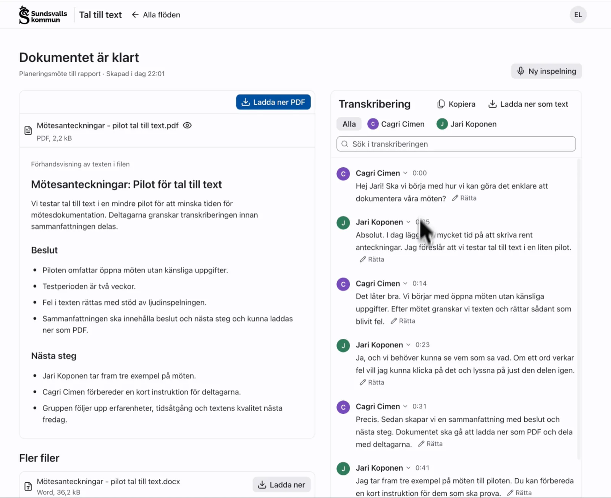
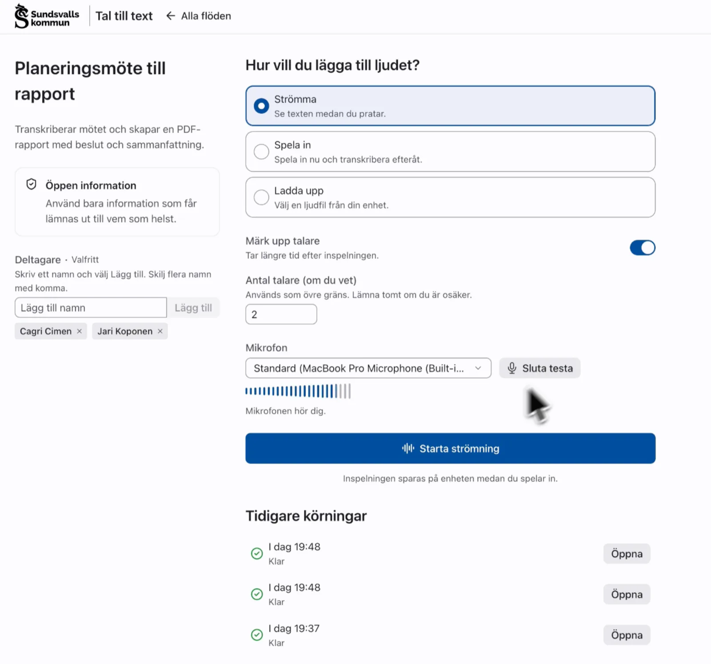
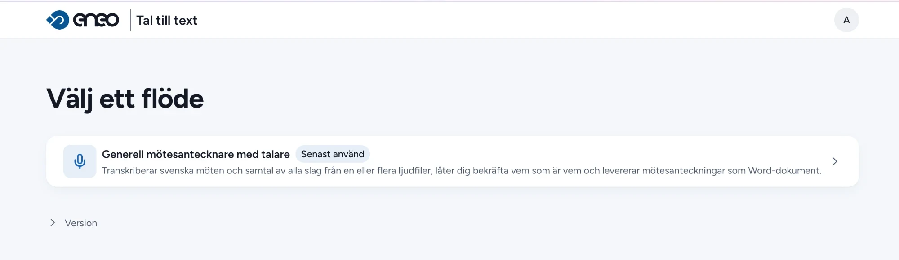
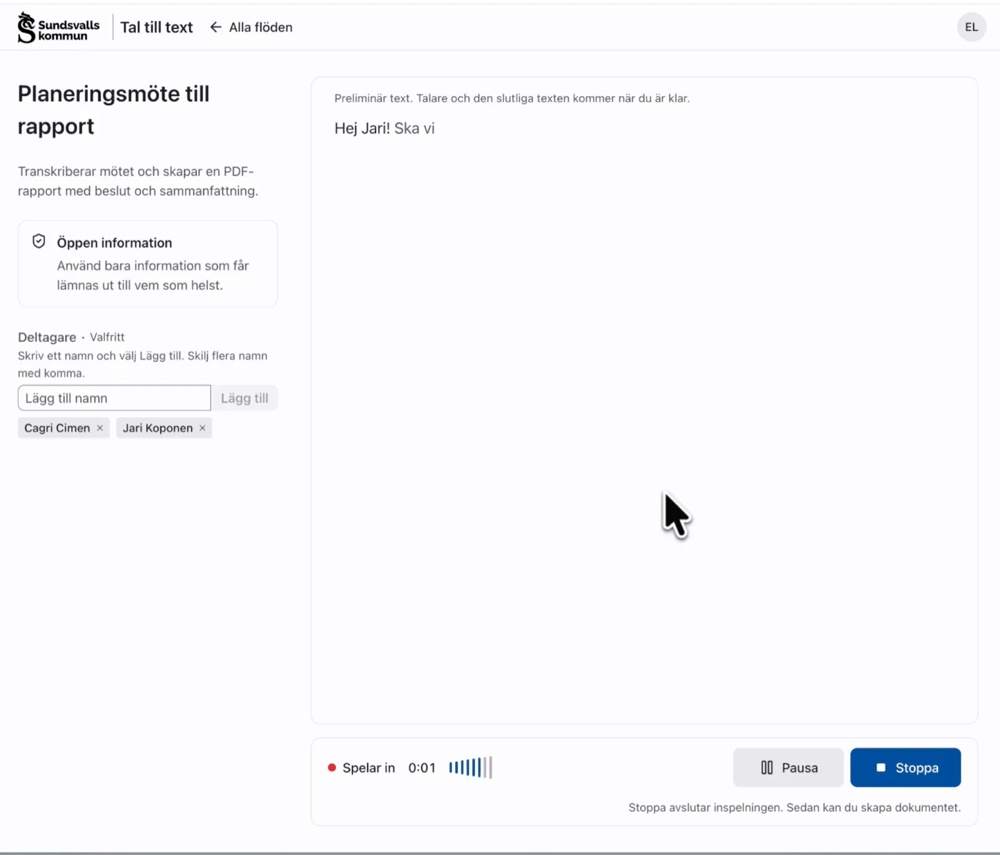
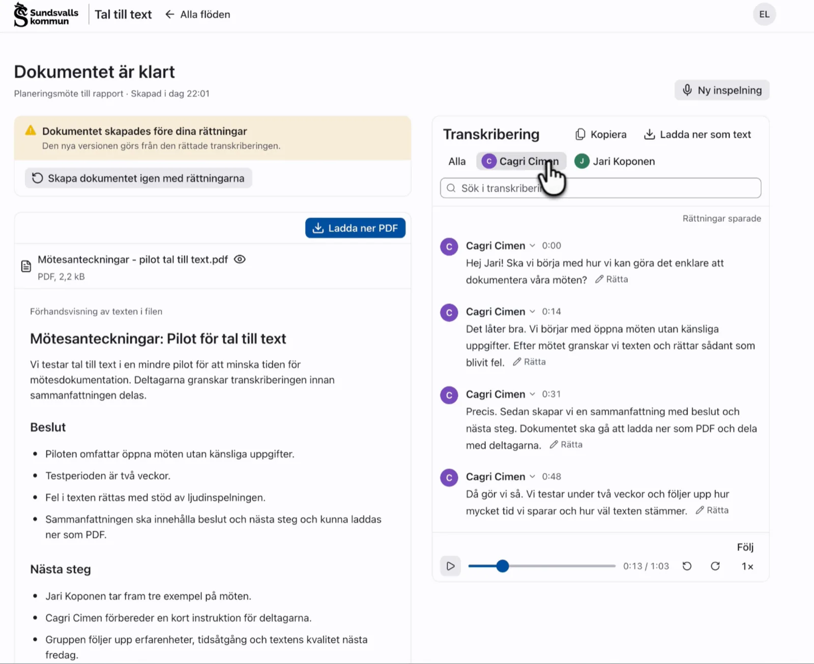
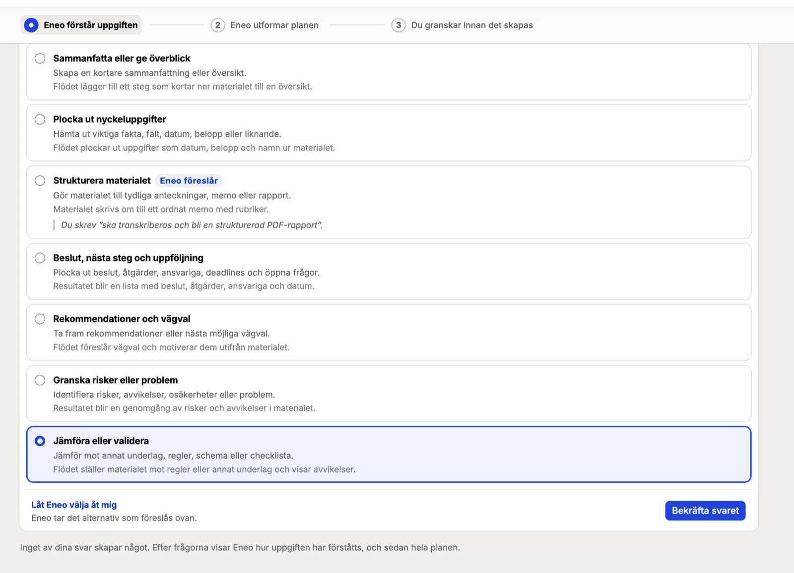
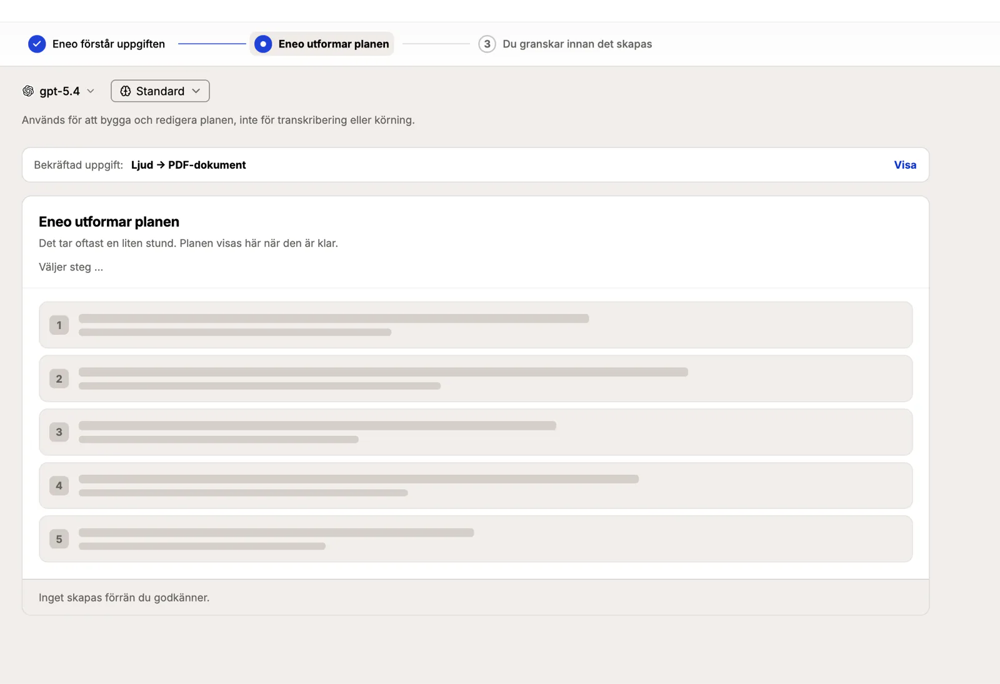
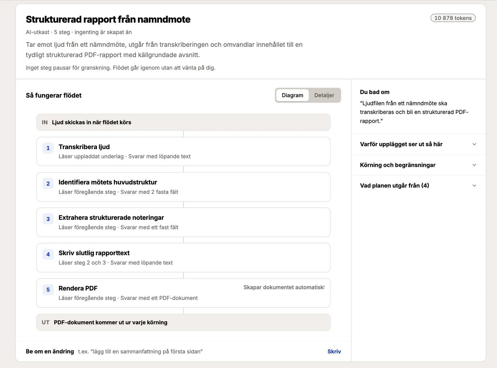

Strömma
Texten växer fram medan ni pratar. Talare och den slutliga texten kommer när ni är klara.
Kommande · Tal till text och Flöden
Strömma, spela in eller ladda upp. Eneo transkriberar, håller isär vem som sa vad och gör protokoll, rapport eller beslutsunderlag – i ett flöde som er verksamhet själv bestämmer, med en människa som granskar där det behövs.

Tre sätt in
Samma flöde, oavsett om du sitter i mötet, har en fil från diktafonen eller vill se texten växa fram medan ni pratar. Tal till text fungerar på mobil, surfplatta och dator.
Texten växer fram medan ni pratar. Talare och den slutliga texten kommer när ni är klara.
Inspelningen sparas på enheten varannan sekund. Efter en krasch, omladdning eller ett inkommande samtal finns den kvar och kan fortsättas.
Ljudfiler ni redan har: MP3, M4A, WAV, OGG, WebM eller MP4. Vid nätverksfel görs uppladdningen om – utan att det blir dubbla körningar.

Så funkar det
Skärmbilderna kommer från Tal till text i en demomiljö.
Listan visar de publicerade flöden ni har tillgång till, ordnade efter yta. Varje flöde säger vad det skapar – till exempel ”Transkriberar mötet och skapar en PDF-rapport med beslut och sammanfattning”.

Vid strömning syns en preliminär text medan ni pratar. Flödets säkerhetsklass visas hela tiden, med organisationens egen benämning, så att alla vet vilken information som får användas.

Dokumentet förhandsvisas och laddas ner som PDF eller Word. Bredvid finns transkriberingen replik för replik, med talare och tid. Sök, filtrera per talare och lyssna – texten följer uppspelningen.
Felhört namn eller fel talare? Rätta direkt i transkriberingen. Varje rättning sparas, och dokumentet skapas igen från den rättade texten med ett klick.

Människan bestämmer
Vilket steg som helst kan pausa för granskning. Den som granskar ser underlag och svar bredvid varandra och godkänner, ändrar eller avvisar. Rättningen går vidare till nästa steg, och beslutet sparas med vem, vad och när.
Den som ser modellens svar bredvid underlaget upptäcker fel där de uppstår – i stället för att godta ett färdigt dokument.
Eneo Flöden
Tal till text är ett gränssnitt. Bearbetningen görs av ett flöde: en kedja av steg i fast ordning, där varje steg gör en avgränsad sak och lämnar över till nästa. Så automatiseras hela processen, inte bara skrivandet.
Modellsteg med instruktion och kunskapskälla, transkribering, talarmappning, sammansättning av text, ifyllnad av Word-mall, PDF eller DOCX, och leverans till andra system.
Flöden tar emot formulärfält, dokument som PDF, Word, Excel och PowerPoint, ljud – och underlag som hämtas från ett API innan steget körs.
Ett publicerat flöde är en oföränderlig version. Ordningen ändras inte under körning, och varje körning är knuten till den version som användes.
AI-byggaren
Ingen kod och inget flödesschema att rita. Beskriv vad ni vill få gjort, bifoga gärna regler och styrdokument – AI-byggaren ställer frågor, visar sin tolkning och föreslår en plan. Ingenting skapas förrän ni godkänner.



Så hänger det ihop
Tal till text gör inget AI-arbete själv. Det är en modul – ett gränssnitt – som kör ett publicerat flöde i Eneo och visar resultatet. Samma flöden kan användas av fler moduler.
Vad man kan använda det till
Ett flöde per behov. Exemplen nedan är kedjor av samma byggstenar.
Nämnder och styrelser
Spela in → talare → beslut per punkt → protokoll i er Word-mall → sekreteraren godkänner.
Handläggning
Diktera efter mötet → strukturerad anteckning enligt er rubrikmall → handläggaren godkänner.
Utredning och tillsyn
Inspelning → transkript → sammanställning med regelverket som underlag → PDF.
Remisser och beslutsunderlag
Dokument in → bearbetning med styrdokument → granskning → underlag i er mall.
Inkomna dokument
Läs dokumentet → extrahera fält som JSON → leverera till verksamhetssystemet.
Ert eget
Börja med det ni gör för hand i dag. Beskriv det för AI-byggaren, granska planen, prova.
Byggt för offentlig sektor
Eneo är öppen källkod och utvecklas av och för offentlig sektor. Allt kan köras där ni bestämmer – och i efterhand går det att visa hur ett resultat togs fram.
För varje steg visas instruktionen, underlaget, svaret, modellerna och antal token. Bevisunderlaget kan exporteras när flödet tillåter det.
Vid publicering kontrolleras att varje stegs modell uppfyller den klass som ytan och underlaget kräver. Klassen visas i Tal till text.
Talarna skiljs åt av Vemsa, en tjänst med öppen källkod som också anger var i ljudet varje ord ligger. Transkriberingen görs av den modell ni väljer, till exempel KB-Whisper.
Samma användare och behörigheter som i Eneo. Webbläsaren har inga nycklar, och en spärr i Eneo gäller från nästa anrop.
Ett flöde kan exporteras som paket och importeras i en annan Eneo-installation – utan körhistorik och inloggningsuppgifter.
Lagringstid per yta eller flöde, nattlig gallring som loggas som antal och regel – och en rättslig spärr som stoppar gallringen när det behövs.
Kom igång
Beskriv uppgiften för AI-byggaren, eller lägg till stegen själv och koppla er Word-mall.
Flödet blir en version som kontrolleras mot säkerhetsklassningen och körs likadant varje gång.
Logga in med ditt vanliga Eneo-konto, välj flödet och börja prata.
Flöden och Tal till text utvecklas just nu och ingår ännu inte i en släppt version av Eneo.